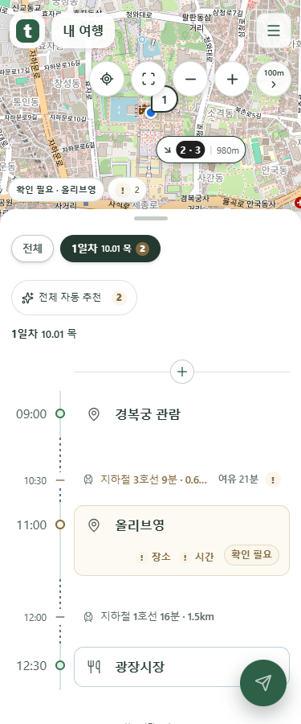

지도 도구 왼쪽에 내 위치
내 위치 → 전체 보기 → 축소 → 확대 → 거리·접기. 위치 동의가 없어도 진입 버튼을 보여 주고, 누르면 기존 위치 이용 동의로 이어집니다.
실제 Chrome에서 구현 화면을 촬영했습니다. 지도 배경은 저장된 OpenStreetMap 타일이며 위치값은 시험용입니다. 현재 브라우저의 실제 위치나 공개 서비스 반영을 확인한 화면은 아닙니다.
가로 도구의 맨 왼쪽
거리·화살표 버튼은 기존 오른쪽 자리에 둡니다. 모든 도구의 누름 영역은 44px입니다.
누른 자리에서 위치 이용 동의
동의 전에는 위치를 읽거나 전송하지 않습니다. 전문 보기·취소·Esc를 지원하며, 취소하면 버튼으로 초점이 돌아갑니다.
내 위치 표시와 이동
허용된 위치를 파란 점과 정확도 원으로 표시합니다. 버튼을 누르면 그곳으로 이동하며, 이후 위치가 바뀌어도 지도를 강제로 따라 움직이지 않습니다. 권한 거절·시간 초과는 기존 알림 토스트로 안내하고 다시 시도할 수 있습니다.

375px · 경복궁의 시험용 좌표로 이동